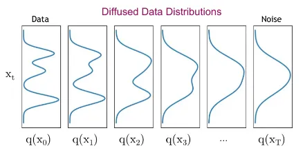

Date: August 29, 2024 | Estimated Reading Time: 15-20 min | Author: Swapnil Mallick
Introduction
Generative models have gained considerable attention in the field of unsupervised learning via Generative Adversarial Networks (GAN) due to
their outstanding data generation capability. Arguably their most significant impact has been in plausible image generation, image-to-image
translation, facial attribute manipulation, human language and music. It all started with the paper "Generative Adversarial Networks"
written by Goodfellow et al. in the year 2014. This paper is very well written and it tries to convince the readers that the method proposed
is sound mathematically. It proposes a framework for estimating generative models via an adversarial process, in which two models are
simultaneously trained - a generative model \(G\) that captures the data distribution, and a discriminative model \(D\) that estimates the
probability that a sample came from the training data rather than \(G\).
In simpler words, the job of the generator \(G\) is to generate synthetic samples given a noise variable input \(z\). On the other hand,
the discriminator \(D\) acts as a critic by trying to tell if a sample came from the real data distribution or was generated by the
generator \(G\). So, we can see that the discriminator is nothing but a simple binary classifier. By then, people already knew how to
build good image classifiers because this paper came shortly before the ResNet paper. However, this whole concept of a generator and
a discriminator and the way they were being used was very new at that time. Before GAN's came into the picture, generative networks
were not really prevalent. Mostly, compositional models and autoencoders were being used which would only generate blurry images along
with deep belief networks which also had their own problems. So, there was not really a satisfactory solution to the image generation
problem that would output high quality synthetic images. So the main underlying idea of this paper was - instead of trying to build
good generators, the authors wanted to harness the power of building good image classifiers, in this case discriminators, which would
help in training the generator and make it better at generating better images. Another novel idea was that the generator is not
trained using the data which was the case in other existing generative models like, autoencoders. Instead, the philosophy here is
to use the power of the discriminative model as classifiers in order to train the generator.
Building Blocks of a GAN
A GAN consists of two separate models: the generator and the discriminator.
A generator \(G\) outputs synthetic samples given a noise variable input \(z\). It is trained to capture the real data
distribution so that its generative samples can be as real as possible.
A discriminator \(D\) estimates the probability of a given sample coming from the real dataset. It works as a critic and is
optimized to tell the fake samples from the real ones.
Figure 1. of a generative adversarial network.
Training a GAN

Figure 2. Change in data distribution in the forward diffusion process
Optimal Generator and Discriminator
References
[1] Merrill I Skolnik. “Introduction to radar”. In: Radar handbook 2 (1962), p. 21.
[2] Nadav Levanon. “Radar principles”. In: New York (1988).
[3] Dean A Pomerleau. “Alvinn: An autonomous land vehicle in a neural network”. In: Advances
in neural information processing systems 1 (1988).
[4] Douglas W Gage. UGV history 101: A brief history of Unmanned Ground Vehicle (UGV)
development efforts. Naval Ocean Systems Center San Diego, CA, USA, 1995.
[5] Sepp Hochreiter and J¨urgen Schmidhuber. “Long short-term memory”. In: Neural computation
9.8 (1997), pp. 1735–1780.